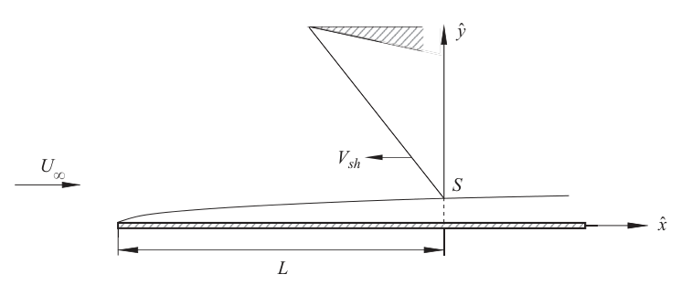
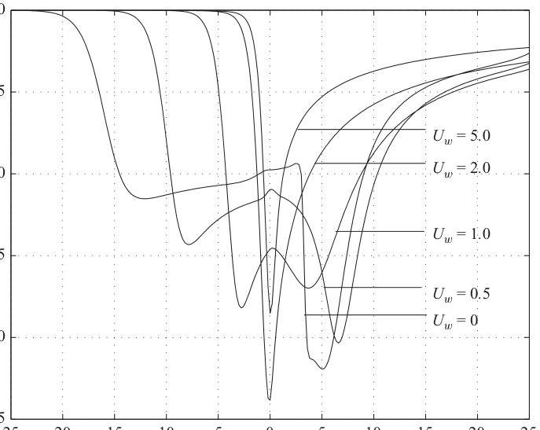
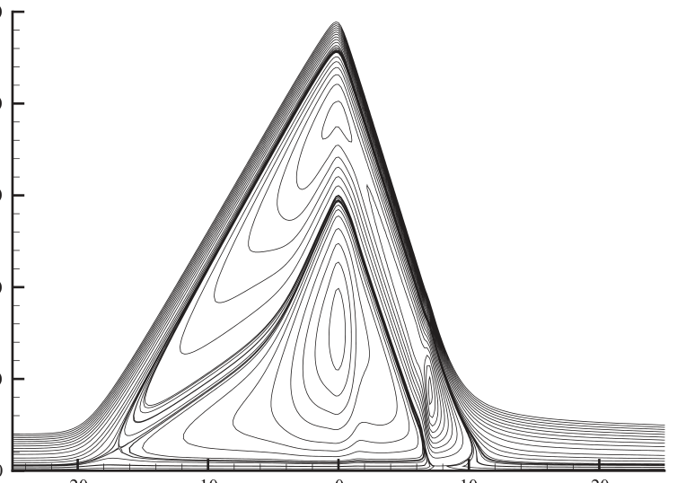
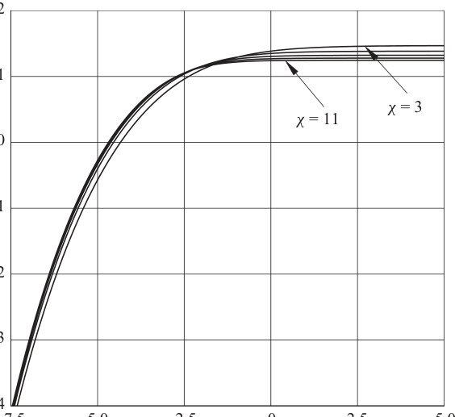

01中文摘要
研究二维层流超声速边界层因激波入射而产生的非定常分离，激波入射点沿壁面以速度Vsh移动。激波强度和速度可随时间变化，但特征时间尺度满足 t ≫ Re^{−1/2}/Vw²，其中Vw=−Vsh为以自由流速度归一化的壁速。在此条件下，在随激波移动的坐标系中相互作用区可视为准定常。首先取Vw=O(Re^{−1/8})，用经典三重台理论描述干扰，只是运动坐标中壁面以Vw运动；用流向有限差分与法向Chebyshev配点数值构造三重台方程解。随后取1≫Vw≫Re^{−1/8}，用匹配渐近展开构造分离点邻域的自诱导分离解。
原始摘要（英文/原文）
This study is concerned with the boundary-layer separation from a rigid body surface in unsteady two-dimensional laminar supersonic flow. The separation is assumed to be provoked by a shock wave impinging upon the boundary layer at a point that moves with speed Vsh along the body surface. The strength of the shock and its speed Vsh are allowed to vary with time t, but not too fast, namely, we assume that the characteristic time scale t Re−1/2/V 2 w. Here Re denotes the Reynolds number, and Vw = −Vsh is wall velocity referred to the gas velocity V∞ in the free stream. We show that under this assumption the flow in the region of interaction between the shock and boundary layer may be treated as quasi-steady if it is considered in the coordinate frame moving with the shock. We start with the flow regime when Vw = O(Re−1/8). In this case, the interaction between the shock and boundary layer is described by classical triple-deck theory. The main modification to the usual triple-deck formulation is that in the moving frame the body surface is no longer stationary; it moves with the speed Vw = −Vsh. The corresponding solutions of the triple-deck equations have been constructed numerically. For this purpose, we use a numerical technique based on finite differencing along the streamwise direction and Chebyshev collocation in the direction normal to the body surface. In the second part of the paper, we assume that 1 Vw O(Re−1/8), and concentrate our attention on the self-induced separation of the boundary layer. Assuming, as before, that the Reynolds number, Re, is large, the method of matched asymptotic expansions is used to construct the corresponding solutions of the Navier–Stokes equations in a vicinity of the separation point.
02阅读说明
理论/渐近分析为主、辅以三重台方程数值解；Ruban, Araki, Yapalparvi & Gajjar, J. Fluid Mech. 678 (2011) 124-155，共32页。材料含6条图件清单和带页码全文；公式文本层多处错位，已用PDF第8-9、14-15、23-24页核对(2.7)-(2.8)、(4.9)-(4.28)、(4.93)-(4.105)，其余公式按文本层转录并在不确定处标注。无实验，无直接Navier-Stokes数值验证；信息完整度较高但存在若干原文/OCR不一致（见open_questions）。 文章类型：期刊
03一句话核心与三句话摘要
上游运动激波使超声速层流边界层分离受抑；三重台数值解与大壁速匹配渐近解给出解析分离结构。
- 非定常边界层分离理论多针对不可压流动或运动壁面，超声速下激波沿壁面上游运动引起的分离缺乏系统理论描述。 AI概括
- 在随激波移动的准定常框架下数值求解三重台方程，发现激波上游运动抑制分离、需要更大的激波压强跃升才能形成回流，且运动壁下出现上下叠置的双涡；对Vw远大于Re^-1/8的情形用匹配渐近展开得到区域1a、1b、1b'、C、V的解析结构。 原文明确
- 分离由粘性子层解的奇异性而非局部回流判定，本文奇点位于粘性底层外缘；区域C压力趋于临界值但不形成回流，回流在粘性区V内由Sychev型解析解给出。 原文明确
04核心内容清单
| 要点 | 类型 | 重要性 | 原文依据 | 属性 |
|---|---|---|---|---|
| 问题被简化为随激波移动坐标中的准定常三重台问题：壁面以Uw=−Vsh向下游运动，干扰区长度O(Re^-3/8)。 | 问题建模 | A | p129-132，§2，图1、图2 | 原文明确 |
| Uw=0时τw四次过零：主分离泡加内部小分离泡；压力呈平台。 | 数值结果 | A | p133，图3、图4 | 原文明确 |
| 壁面运动后τw符号不再指示回流区，只表示近壁流体相对壁面快慢；分离改用双极小加压力平台判定。 | 判据变化 | A | p134，§3 | 原文明确 |
| Ps=5时Uw=1.18、Ps=7时Uw=1.97可把回流区缩为一点；Uw<1.97（Ps=7）存在受阻分离泡。 | 定量临界值 | A | p134，§3 | 原文明确 |
| 运动壁下分离表现为流线鞍点（MRS条件），鞍点后形成上下两个反向旋转的回流区，上顺时针、下逆时针，第二鞍点终止分离。 | 流场结构 | A | p134-135，图5 | 原文明确 |
| Uw→∞时区1a无粘，P*=1/2、Ue=0于X*=0；区1b的分离奇点位于粘性底层外缘。 | 渐近结果 | A | p137-142，§4.1-§4.2 | 原文明确 |
| 区1b的位移效应产生对数项，需引入1b'与复合区C；C区压力单调趋近P̆c=1+(1/χ)(1+ln(χ/2))，但无回流。 | 渐近结果 | A | p143-148，§4.3-§4.4，图6 | 原文明确 |
| 区V为粘性回流区，解析解给出双涡，速度在s̃=−6ln2首次为零。 | 解析解 | A | p149-151，§4.5 | 原文明确 |
| 作者把Moore-Rott-Sears条件推广到超声速运动激波情形，并强调回流形成是粘性过程。 | 理论贡献 | A | p151-152，§5 | 原文明确 |
| 激波上游运动抑制分离：Vsh越大，所需激波压强跃升越大。 | 核心结论 | A | p152，§5 | 原文明确 |
| 分析限定于二维层流完美气体、Re→∞、激波速度不太快，且无实验或直接NS验证。 | 适用边界 | B | p124-125、p151-152 | AI概括 |
| 文中存在若干不一致：图5图注Uw=0.5而正文Uw=0.2；计算域Xmin/Xmax均写−60；位移厚度量级表述O(ln s/s)与式(4.78)的(−X*)^{-2}形式不一致。 | 材料问题 | B | p133、p134-135、p128、p144 | AI概括 |
05引言：研究问题与领域缺口
第1节（p124-128）从Prandtl的分离判据τw=μ(∂u/∂y)|y=0=0讲起：经典边界层方程在分离点出现奇异性（Landau-Lifshitz预测τw∼√(xs−x)，Goldstein证明解不能越过零摩阻点），因此必须考虑粘性-无粘干扰，即Neiland、Stewartson-Williams的三重台理论。作者把非定常分离分为两类：一是“起始分离”，在原本附着的边界层中某点于有限时刻出现，典型是圆柱脉冲启动（t=0.644时后驻点首次τw=0，t≈3.0时解在θ=111°出现奇点并卷起涡）；二是“已发展分离”，如卡门涡街。关键概念是Moore-Rott-Sears条件u=∂u/∂y=0，即分离点位于边界层内部而非壁面；Sychev把三重台思想用于下游运动壁的定常分离，证明经典边界层解在MRS点奇异，并指出运动壁前已处于强逆压、干扰以无粘为主。缺口是：Sychev的分析针对不可压流动，超声速下激波沿壁面上游运动（等效于壁面下游运动）的分离过程尚不清楚，且作者预告超声速分离与亚声速显著不同（p128）。本文结构：§2建立问题并采用三重台描述（Vsh=O(Re^-1/8)）；§3给出三重台方程数值解；§4对Vw≫Re^-1/8做渐近分析；§5总结。
06流动条件与几何构型
| 项目 | 数值/描述 | 依据 | 备注 |
|---|---|---|---|
| 流动类型 | 二维、层流、超声速、完美气体平板边界层；上方楔产生入射激波 | p129，§2 | 无湍流、无三维、无真实气体效应 |
| 来流马赫数M∞ | 有限且大于1；文中未给具体数值 | p130，式(2.4) | 受限于材料，无法确认具体工况 |
| 雷诺数Re | Re=ρ∞V∞L/μ∞→∞；文中未给有限具体值 | p130，式(2.3) | |
| 比热比γ | 文中未提及具体数值 | p130，式(2.4)仅出现γ | |
| 壁面热边界条件 | 文中未提及（只给速度无滑移与不可穿透） | p131-132，式(2.8c) | |
| 激波运动方向与速度 | 激波入射点S沿板上游移动，速度Vsh；随激波坐标中壁面速度Vw=−Vsh | p129-130，§2，图1 | |
| 区制1 | Vsh=O(Re^-1/8)，三重台理论适用 | p130，式(2.5) | |
| 区制2 | 1≫Vw≫O(Re^-1/8)，匹配渐近展开 | p135，§4 | |
| 激波压强跃升Ps（区制1数值） | Ps=5和Ps=7两组 | p133-134，图3-图5 | |
| 壁面速度Uw（区制1数值） | Uw=0、0.5、1.0、2.0、5.0（图3、图4） | p133-134，图3、图4 | 图注列出0、0.5、1.0、2.0、5.0 |
| 临界Uw | Ps=5时1.18；Ps=7时1.97 | p134，§3 | |
| 自诱导分离临界激波强度 | P̄s=Ps/Uw²=1/2 | p138-139，式(4.10)、(4.28) | |
| 区域C参数χ | χ=2|lnσ|；图6取3.0至11.0、间隔2.0（即3,5,7,9,11） | p144、p147，图6 | |
| 数值域X | Xmin=−60至Xmax=−60（原文如此，疑为−60至60，受限于材料无法确认） | p133，§3 | |
| 流向网格 | 均匀网格ΔX=0.01 | p133，§3 | |
| 法向离散 | 64个Chebyshev配点，Ymax=50 | p133，§3 | |
| 激波光滑参数 | r=0.5 | p133，式(3.1) | |
| 上游边界条件 | U=Y+Uw at X=−∞；P=Ps at X=∞ | p132，式(2.8d)、(2.8h) |
07核心现象与关键参数
| 参数 | 定义 | 数值 | 关系/说明 | 依据 |
|---|---|---|---|---|
| 雷诺数Re | Re=ρ∞V∞L/μ∞，L为平板前缘到激波入射点的距离 | →∞；无具体数值 | 三重台展开的小参数为Re^-1/8 | p130，式(2.3) |
| 来流马赫数M∞ | M∞=V∞/√(γp∞/ρ∞) | 有限且>1；无具体数值 | 通过β=√(M∞²−1)进入仿射变换 | p130，式(2.4)；p131-132 |
| 激波速度Vsh | 激波入射点沿板面的上游移动速度 | 区制1 O(Re^-1/8)；区制2 1≫Vsh≫Re^-1/8 | Vw=−Vsh | p129-130，式(2.5)；p135 |
| 壁面速度Uw | 随激波坐标中壁面向下游运动的速度，按Re^-1/8缩放 | 0、0.5、1.0、2.0、5.0；临界1.18（Ps=5）、1.97（Ps=7） | Uw增大抑制分离 | p131-134 |
| 激波强度Ps | 入射激波压强跃升，按Re^-1/4缩放 | 5、7 | Ps=Uw²P̄s；P̄s为O(1)参数 | p132，式(2.8f)；p137，式(4.10) |
| P̄s | Ps/Uw²，O(1)激波强度参数 | 自诱导分离取1/2 | 决定压缩族解与χ | p137-139，式(4.10)、(4.25)-(4.28) |
| χ | χ=2|lnσ|，区C的大参数 | 图6取3至11 | χ越大，P̆c越低 | p144；p147，图6 |
| σ | 区C纵向缩放参数X*=σX̆ | 由2|lnσ|/σ²=Uw/2确定 | 使1a与1b的流线角同阶 | p144，式(4.81)-(4.82) |
| P̆c | 区C压力临界值 | P̆c=1+(1/χ)(1+ln(χ/2)) | P̆以指数方式趋近P̆c | p147-148，式(4.105)、(4.112) |
| Ψ̆0 | 区C中速度最小的流线位置 | Ψ̆0=1+(1/χ)ln(χ/2) | 该流线上Ŭ→0而其他流线仍为正 | p147，式(4.103) |
| H̆0 | Bernoulli函数在Ψ̆0处的最小值 | H̆0=1+(1/χ)(1+ln(χ/2))=P̆c | P̆c=H̆0 | p147，式(4.104)-(4.105) |
| s̃、ñ | 区V中沿分界流线的弧长与垂直距离 | 分离首次出现于s̃=−6ln2 | ũ=√2e^{−s̃/2}cosh ñ−4 | p150-151，式(4.128)-(4.131) |
| ΔX、Ymax、r | 流向步长、法向外边界、激波光滑参数 | ΔX=0.01；Ymax=50；r=0.5；64个配点 | 数值解分辨率 | p133，§3 |
08方法与数据
问题设定（§2，p129-132）：平板置于平行于来流的超声速完美气体中，上方楔产生激波，激波入射点S以速度Vsh沿板上游移动；L为平板前缘到S的距离；以S为原点取随激波移动的Cartesian坐标(x̂,ŷ)，速度分量(û,v̂)，密度ρ̂、压力p̂、焓ĥ、粘性μ̂。无量纲化(2.1)-(2.2)以V∞、ρ∞、p∞、μ∞、L为尺度，p̂=p∞+ρ∞V∞²p，ĥ=V∞²h；Re=ρ∞V∞L/μ∞→∞，M∞=V∞/√(γp∞/ρ∞)>1有限（(2.3)-(2.4)）。区制1取Vsh=O(Re^-1/8)（(2.5)），在随激波移动的坐标中流动准定常，壁面以Uw=−Vsh（按Re^-1/8缩放）向下游运动。三重台结构（图2）：交互区长度O(Re^-3/8)，由粘性子层（区1，厚度O(Re^-5/8)、速度O(Re^-1/8)）、边界层主体（区2，厚度O(Re^-1/2)、速度O(1)）和外层无粘势流（区3）组成；分离的临界激波压强跃升量级为Δp_shock∼u²∼Re^-1/4（(2.6)）。区1由边界层方程(2.8a,b)描述，压力P只随X变；壁面U=Uw、V=0（(2.8c)），上游U=Y+Uw（(2.8d)），外层匹配U→Y+A(X)（(2.8e)），干扰律P=PsH(X)−dA/dX（(2.8f)），下游P=Ps（(2.8h)）。数值方法（§3，p133）：采用Korolev-Gajjar-Ruban(2002)的method B，以流函数Ψ表示U=∂Ψ/∂Y、V=−∂Ψ/∂X，X方向迎风有限差分，Y方向把0<Y<Ymax线性映射到−1<z<1并在每个X站位用Chebyshev配点，代数方程用Newton迭代。计算域Xmin=−60至Xmax=−60（原文如此，疑为−60至60，受限于材料无法确认），ΔX=0.01，Y向64个配点，Ymax=50；入射激波做光滑处理，干扰律写成P=(Ps/2)(1+X/√(X²+r²))−dA/dX（(3.1)），r=0.5。区制2（§4，p135-151）：假设1≫Vw≫Re^-1/8，从三重台问题(2.8)取Uw→∞，改写成von Mises变量(4.1)，按“最小退化原则”分层：1a（无粘主交互层）、1b（近壁粘性层）、1b'（1b外缘的局部无粘层）、C（1a'与1b'重叠区的复合解）、V（粘性回流区）；用匹配渐近展开和复合展开求解，V区归结为Sychev(1978,1987)的边值问题并取解析解。无实验验证，也未与直接Navier-Stokes计算对比。
| 项目 | 内容 | 依据 | 备注 |
|---|---|---|---|
| 理论框架 | 大Re渐近、三重台粘性-无粘干扰理论；匹配渐近展开；复合渐近展开 | p128-132、p135-151 | |
| 问题坐标 | 随激波移动的Cartesian坐标，x̂从S沿板面量起，ŷ垂直板面 | p129-130，§2，图1 | |
| 控制方程（区1） | 边界层方程(2.8a,b)，压力P=P(X)；壁面U=Uw、V=0；上游U=Y+Uw；外层U→Y+A(X)；干扰律P=PsH(X)−dA/dX；下游P=Ps | p132，式(2.8) | |
| 数值方法 | method B（Korolev-Gajjar-Ruban 2002）：流函数Ψ，U=∂Ψ/∂Y、V=−∂Ψ/∂X；X向迎风有限差分；Y向线性映射到[−1,1]后用Chebyshev配点；Newton迭代 | p133，§3 | |
| 计算域与网格 | Xmin=−60至Xmax=−60（原文如此，疑笔误）；ΔX=0.01；64个Chebyshev配点；Ymax=50 | p133，§3 | |
| 激波光滑 | P=(Ps/2)(1+X/√(X²+r²))−dA/dX，r=0.5 | p133，式(3.1) | |
| 大Uw渐近 | 从(2.8)取Uw→∞，改von Mises变量(4.1)，按最小退化原则分层1a/1b/1b'/C/V | p135-151，§4 | |
| 区1a | 忽略粘性，Bernoulli积分；压力由干扰律(4.15)确定；激波前后分别求解 | p136-139，§4.1 | |
| 区1b | 保留粘性，求外缘附近的渐近解；发现外缘奇点并引入1b' | p139-142，§4.2 | |
| 区C | 复合Bernoulli函数(4.97)，速度(4.98)，压力积分方程(4.102a)；数值求解初值问题并与解析极限(4.105)、(4.112)对照 | p144-148，§4.4，图6 | |
| 区V | Sychev型边值问题(4.129)，解析解(4.130)-(4.131) | p149-151，§4.5；Appendix | |
| 验证 | 无实验验证；无直接Navier-Stokes对比；仅以已有三重台计算和Sychev理论作定性对照 | 全文 | 作者称从NS直接分析与从三重台取极限结果相同，可视为Kaplun扩展定理的验证（p152） |
| 不确定度/收敛性 | 文中未提及网格无关性、Newton收敛判据或数值误差估计 | p133，§3 | 受限于材料，无法确认 |
09核心推导与公式
把激波沿板上游运动的问题变换到随激波移动的坐标，使非定常干扰在Vsh不太快时准定常化；先用三重台方程数值求解Uw=O(1)，再令Uw→∞做匹配渐近展开，把粘性底层拆成无粘的1a与粘性的1b，逐层求出压力、速度和位移，最后用复合展开处理1a'与1b'的重叠区C，并用Sychev解析解闭合粘性回流区V。
关键假设
- 二维、层流、完美气体；Re=ρ∞V∞L/μ∞→∞，M∞有限且大于1
- 激波入射点以Vsh沿板上游移动，且Vsh（或壁速Vw）随时间变化不太快，使随激波坐标中的流动准定常
- 区制1：Vsh=O(Re^-1/8)，三重台理论适用；区制2：1≫Vw≫Re^-1/8
- 边界层内压力在法向不变（P=P(X)）
- 壁面速度无滑移U=Uw、法向不可穿透V=0；上游边界层为未受扰的线性剖面U=Y+Uw
- 区1a中粘性项可忽略，流动无粘；区1b中惯性项与粘性项平衡
- 区C中流动仍无粘，可用Bernoulli方程；区C的位移主导边界层位移厚度
- 区V中压力由外部无粘解给出，粘性回流在分界流线附近形成
推导过程
以V∞、ρ∞、p∞、μ∞、L为尺度无量纲化，压力写成p∞+ρ∞V∞²p，焓写成V∞²h；定义Re和M∞。令激波入射点S为原点、坐标随激波以Vsh上游移动，则壁面在相对坐标中以Vw=−Vsh向下游运动。假设Vsh=O(Re^-1/8)，流动在移动坐标中准定常，可用三重台描述。
区1（粘性子层）用边界层方程描述，压力只随X变化；壁面满足无滑移和不可穿透，上游与未扰边界层匹配为U=Y+Uw，外层与区2匹配为U→Y+A(X)。干扰律把压力写成入射激波（Heaviside函数）与位移效应之和，下游要求P=Ps以闭合问题。仿射变换把ρw、μw、β=√(M∞²−1)吸收进尺度，使方程化为规范形式。
引入流函数Ψ使U=∂Ψ/∂Y、V=−∂Ψ/∂X；X方向用迎风有限差分，Y方向用Chebyshev配点，Newton迭代求解。入射激波用r=0.5的光滑函数代替Heaviside，以避免间断处的数值困难。
令Uw→∞，为避免初始条件退化取Ψ∼Uw²、U∼Uw；非线性分离过程要求惯性项与压力项平衡，故P∼U²∼Uw²；由连续性得V∼Uw²/X，由干扰律平衡得X∼1/Uw，于是V∼Uw³。据此定义X=X*/Uw、Ψ=Uw²Ψ*、U=UwU*、V=Uw³V*、P=Uw²P*，并设Ps=Uw²P̄s（P̄s为O(1)）。代入后粘性项消失，区1a为无粘流。
无粘动量方程积分得Bernoulli方程，由上游条件U*=√(2Ψ*+1)定出H*=Ψ*+½，解出U*=√(2Ψ*+1−2P*)。把它代入连续性方程并对Ψ*积分，得到V*/U*的表达式；令Ψ*→∞代入干扰律，得到只含P*(X*)的积分-微分方程(4.15)。
激波后X*>0时方程化为P*−P̄s=[1/√(1−2P*)]dP*/dX*，满足下游条件的唯一解是P*=P̄s。激波前X*<0时令Φ=√(1−2P*)，方程化为dΦ/dX*=(Φ²−1)/2，解得Φ=(1−Ce^X*)/(1+Ce^X*)；C>0对应压缩族，写C=e^{−χ}后各解只差一个X*平移。由X*=0处压力连续可定χ，得到两个根，其中只有正根χ1保证Φ>0。
当P*达到1/2时，区1a底部Ψ*=0处的速度为零，区1b的解在此出现分离奇性。取P̄s=1/2，则χ1=0，压缩族解简化为只含e^{X*}的形式；激波后P*=1/2。把该压力代回U*并取Ψ*=0，得到区1b外缘速度Ue：激波前为(1−e^X*)/(1+e^X*)，激波后为零。
区1b取U=UwU(X*,Ψ)、V=UwV(X*,Ψ)，惯性项与粘性项平衡给出Ψ=O(1)。把U在X*→−∞展开为1+f(Ψ)e^X*，解得f=−2+2e^{−Ψ}。再引入修正Bernoulli函数H=½U²−½Ue²，把动量方程写成H的扩散型方程；在Ψ→∞时设H=h(X*)e^{−Ψ}，得h=2/(e^X*+2+e^{−X*})，从而得到区1b外缘速度。令X*→0−时Ue=½(−X*)，并引入η=2ln(−X*)+Ψ的1b'区，解出F=√(¼+e^{−η})。积分连续性方程得到V/U，其在X*→0−的行为含4[ln(−X*)−1]/(−X*)²项；与区1a的位移比较后，该项归因于区1b。
区C位于1a'与1b'的重叠区。引入X*=σX̆，并令2|lnσ|/σ²=Uw/2，使1a与1b的流线角同阶；χ=2|lnσ|。区C中流动无粘，Bernoulli函数写成H̆=Ψ̆+½e^{−χ(Ψ̆−1)}（1a'与1b'贡献相加），于是Ŭ=√(2Ψ̆+e^{−χ(Ψ̆−1)}−2P̆)。用连续性方程和干扰律得到P̆(X̆)的积分方程(4.102a)；数值解（图6）表明P̆单调趋于有限临界值。由H̆的最小值可解析得到Ψ̆0、H̆0和P̆c；在P̆→P̆c时积分由Ψ̆0附近主导，展开后得到dP̆/dX̆=(√χ/2)(P̆c−P̆)，故P̆以指数方式趋近P̆c，速度按exp[−(1/4)√χ(X̆−X̆0)]衰减。
区C中速度指数衰减，粘性项最终与惯性项平衡，形成区V。以分界流线的弧长s̃和法向距离ñ为变量，边值问题化为(4.129)，其解析解为ψ̃=√2e^{−s̃/4}sinh ñ−4ñ、p̃=−e^{−s̃/2}，纵向速度ũ=√2e^{−s̃/2}cosh ñ−4。ũ在ñ=0上于s̃=−6ln2首次为零，下游形成关于分界流线对称的两个涡。
适用边界：推导建立在Re→∞、二维、层流、完美气体、激波速度不太快（准定常）等假设上；区制1要求Vsh=O(Re^-1/8)，区制2要求1≫Vw≫Re^-1/8，不能外推到Vw=O(1)或强非定常。无实验或直接NS验证；具体M∞、Re、γ、壁温未给出；1a/1b/C/V各层的定量适用范围未用数值系统检验。原文还存在图5工况文字与图注不一致、计算域Xmin/Xmax笔误、位移厚度量级表述与式(4.78)不一致等问题。
10结果：主要发现与关键证据
三重台数值解（§3，p133-135，图3-图5）：Uw=0时τw(X)曲线四次穿过横轴，第一次和最后一次对应主分离泡的分离/再附，中间两次对应主回流区内嵌的第二个小分离泡，压力出现平台。壁面运动后τw符号不再指示回流区，而只表示近壁流体比壁面快（τw>0）或慢（τw<0）；分离判据改为τw出现两个极小（分离点后、再附点前）且压力保留平台。Uw=1.0时平台仍在；Uw=2.0时τw只剩一个极小、压力平台消失。作者进一步用全场速度判定附着/分离：转变发生在除一点U=0外U处处为正时。Ps=5时把回流区缩为一点需Uw=1.18；Ps=7时需Uw=1.97，若Uw<1.97则存在受阻分离泡。图5给出Ps=7、Uw=0.2（图注写0.5，见open_questions）的流线：分离表现为流线图中的一个鞍点，MRS条件在该点成立；鞍点后形成上下两个回流区，上层顺时针、下层逆时针，第二个鞍点终止分离，其上方另有一个涡开始形成（p134-135）。大Uw渐近（§4）：Uw→∞时区1a的粘性项消失、流动无粘，压力满足P*=P̄sH(X*)+[1/√(1−2P*)]dP*/dX*（(4.15)），激波后P*=P̄s（(4.17)），激波前为压缩族解(4.24)；取P̄s=1/2时χ1=0，得到P*=½[1−((1−e^X*)/(1+e^X*))²]（X*<0）、P*=1/2（X*≥0）（(4.28)），区1b外缘速度Ue=(1−e^X*)/(1+e^X*)（X*<0）、Ue=0（X*≥0）（(4.29)）。区1b在粘性底层外缘出现分离奇点，进入1b'后流动再次无粘；区1b的位移效应给出V/U∼4[ln(−X*)−1]/(−X*)²（(4.78)）。区C用复合Bernoulli函数H̆=Ψ̆+½e^{−χ(Ψ̆−1)}（(4.97)），速度Ŭ=√(2Ψ̆+e^{−χ(Ψ̆−1)}−2P̆)（(4.98)），压力由积分方程(4.102a)确定；数值解（图6，χ=3,5,7,9,11）显示P̆(X̆)单调上升并趋于有限值P̆c=1+(1/χ)(1+ln(χ/2))（(4.105)），速度在Ψ̆0=1+(1/χ)ln(χ/2)流线上趋于零而其他流线仍为正，P̆以exp[−½√χ(X̆−X̆0)]趋近P̆c（(4.112)）。区C只描述减速、不形成回流；再下游的粘性区V由(4.125)-(4.127)描述，解析解为ψ̃=√2e^{−s̃/4}sinh ñ−4ñ、p̃=−e^{−s̃/2}、ũ=√2e^{−s̃/2}cosh ñ−4（(4.130)-(4.131)）；ũ在分界流线ñ=0上于s̃=−6ln2首次为零，下游形成关于分界流线对称的两个涡（p150-151）。
| 发现 | 证据 | 证据类型 | 强度 | 位置 | 属性 |
|---|---|---|---|---|---|
| 激波沿壁面上游运动抑制边界层分离：激波速度越高，形成回流所需的激波压强跃升越大。 | Ps=5时需Uw=1.18才能把回流区缩为一点，Ps=7时需Uw=1.97；Uw<1.97（Ps=7）存在受阻分离泡；结论节明确总结。 | 三重台数值解+渐近分析 | 强 | p134、p152，§3、§5 | 原文明确 |
| 运动壁下分离不再由τw符号判定；τw只表示近壁流体相对壁面快慢，分离改用双极小和压力平台判定。 | Uw=1.0时压力平台仍在，Uw=2.0时τw只有一个极小、平台消失；正文明确说明。 | 数值判据 | 强 | p133-134，图3、图4 | 原文明确 |
| 运动壁下出现上下叠置、方向相反的两个回流区，而非静止壁的单个回流区。 | 图5流线图：分离鞍点后上层顺时针、下层逆时针，第二鞍点终止分离，其上方另有一涡萌生。 | 流线结构 | 强 | p134-135，图5 | 原文明确 |
| Uw≫Re^-1/8时区1a无粘，压力在X*=0达到1/2、外缘速度降为零；分离奇点位于粘性底层外缘。 | 式(4.28)-(4.29)给出P*与Ue；§4.2指出1b解在外缘出现分离奇性，故需1b'。 | 渐近解 | 强 | p138-142，§4.1-§4.2 | 原文明确 |
| 区C压力单调趋近有限临界值P̆c，速度指数衰减但流动无粘、不形成回流。 | 图6数值解显示P̆(X̆)有有限极限；式(4.105)给出P̆c，式(4.112)、(4.114)给出指数趋近；§4.4明确C区只描述减速。 | 数值+解析 | 强 | p146-148，图6，式(4.105)-(4.114) | 原文明确 |
| 粘性区V存在解析解，速度在s̃=−6ln2首次为零，下游形成关于分界流线对称的双涡。 | 式(4.130)-(4.131)给出ψ̃、p̃、ũ；正文明确ũ首次为零的位置及双涡。 | 解析解 | 强 | p150-151，§4.5 | 原文明确 |
| 作者把Moore-Rott-Sears条件推广到超声速运动激波情形，并强调回流形成是粘性过程。 | 结论节明确表述；§4.5把V区归结为Sychev问题并用其解析解闭合。 | 理论结论 | 强 | p151-152，§5 | 原文明确 |
11机制解释与论证链
随激波移动的坐标中壁面向下游运动，粘性使近壁流体被壁面带动，因此回流不能像定常壁面那样从壁面点起始，而必须满足Moore-Rott-Sears条件u=∂u/∂y=0、从边界层内部起始。Uw较小时三重台解仍有回流，但τw符号已不再直接指示回流；Uw增大使分离受抑，需要更大的Ps才能形成回流，并在运动壁下形成上下叠置的双涡。Uw≫Re^-1/8时，粘性底层分成无粘的1a和粘性的1b：1a中压力在X*=0达到1/2、外缘速度降为零；1b的分离奇点出现在其外缘，导致直渐近展开失效，需在1a'与1b'的重叠区C用复合Bernoulli函数匹配。C区压力单调趋近临界值P̆c，速度指数衰减但流动仍无粘，只能描述减速、不能形成回流；真正的回流在更下游的粘性区V中形成，其Sychev型解析解给出对称双涡。作者据此把MRS条件推广到超声速运动激波情形，并强调回流形成是粘性过程。
12讨论：结论、贡献与局限
作者的核心论证链是：随激波移动的坐标中壁面向下游运动，近壁流体被粘性带动，回流区不能像定常壁面那样从壁面点起始，而应满足MRS条件、从边界层内部起始；因此非定常分离的判据不是τw=0或局部出现回流，而是粘性子层解出现奇异性。Uw=O(1)时三重台数值解表明，激波上游运动抑制分离：Uw越大，形成回流所需的Ps越大（Ps=5需1.18，Ps=7需1.97），且运动壁下由单个回流区变为上下叠置的双涡（p133-135、p152）。Uw≫Re^-1/8时，作者用匹配渐近展开给出完整分层：1a无粘、压力在X*=0达到1/2并使外缘速度为零；1b的奇点出现在其外缘而非壁面，因而Poincaré型直渐近展开失效，必须在1a'与1b'的重叠区C使用复合展开；C区压力虽趋临界值P̆c，但流动仍无粘、只减速不回流；真正的回流在更下游的粘性区V形成，其解与Sychev(1987)的不可压运动壁结果同型，作者据此把MRS条件推广到本文的超声速运动激波情形（p151-152）。作者还强调，从Navier-Stokes方程在1≫Vsh≫Re^-1/8下直接分析（Araki 2006）与从三重台方程取Uw→∞得到相同结果，可视为Kaplun扩展定理的一个验证（p152）。局限：二维层流完美气体、Re→∞、激波速度不能太快（准定常）、无实验/直接NS校验；分层解的定量适用范围未用数值算例系统检验；文中若干排版/符号不一致需回原文核对。
作者结论
作者结论（p151-152，§5）：(1) 研究了激波入射点以Vsh沿边界层上游运动时的激波/边界层干扰；Vsh=O(Re^-1/8)时用三重台理论描述，激波运动抑制边界层分离，激波速度越高，形成回流所需的激波压强跃升越大；与静止激波不同，运动激波下出现上下叠置的双涡。(2) Vsh≫Re^-1/8时整个分析可解析进行；从三重台方程取Vsh/Re^-1/8→∞与从Navier-Stokes方程假设1≫Vsh≫Re^-1/8出发得到相同渐近方程，可视为Kaplun扩展定理的又一验证。(3) 主要目标是推广Moore-Rott-Sears条件：非定常流中回流出现不必然等于分离，分离须由粘性子层解的奇异性判定；本文奇点出现在子层外缘，故Poincaré型直渐近展开不适用，需在部分流场使用复合展开。(4) 与不可压情形类似，回流区的形成是粘性过程，发生在边界层位移厚度随流向线性增长的区域；相应边值问题有简单解析解。
主要贡献
- 把激波沿壁面上游运动等价为随激波坐标中的下游运动壁，建立了Vsh=O(Re^-1/8)的准定常三重台问题并给出数值解。
- 发现运动激波抑制分离、临界Ps随Uw增大，以及运动壁下的上下双涡结构。
- 在1≫Vw≫Re^-1/8下构造了1a/1b/1b'/C/V完整匹配渐近结构，指出分离奇点位于粘性底层外缘并引入复合展开。
- 给出区C压力临界值P̆c及指数趋近律，并用Sychev解析解闭合区V的双涡。
- 将Moore-Rott-Sears条件推广到超声速运动激波/运动壁分离。
局限与未解决问题
作者承认/明示的边界：二维、层流、完美气体、Re→∞；激波速度须满足Vsh=O(Re^-1/8)或1≫Vw≫Re^-1/8，即激波不能太快；分析是渐近的，未给出有限Re修正。AI识别的局限：无实验、无直接Navier-Stokes数值验证，定量可靠性未用独立算例检验；未给具体M∞、Re、γ、壁温/热流条件，无法直接对应某个风洞或飞行工况；只处理激波诱导分离，不含激波串、分离泡低频振荡或湍流；三维、有限展长、真实气体效应未涉及；文中图5工况文字（Uw=0.2）与图注（Uw=0.5）不一致，计算域Xmin/Xmax均写−60，位移厚度量级表述与式(4.78)不一致，引用时需回原文核对。
13对高速流动与工程的意义
本文为超声速运动激波/运动壁诱导的层流分离提供了自洽的高Re渐近框架：把非定常分离判据从“τw=0/局部回流”推进到“粘性子层解奇异性”，并说明运动壁使分离受抑、临界激波强度提高、回流结构由单涡变为双涡。对理解机动飞行器、振动舵面或运动激波扫过壁面时的分离迟滞、载荷峰值与分离区相位有理论参考价值（AI推断）；对进气道/隔离器中运动激波诱导分离的判据也有启示（AI推断）。但不能直接用于湍流、三维、强非定常或有限Re工程预测；其定量结论需借助直接NS/实验校验后才能用于设计。
14核心图件




15可引用原文素材
| 原文短句 | 可支持的观点 | 位置 | 使用建议 |
|---|---|---|---|
| “the shock motion suppresses the boundary-layer separation” | 激波运动抑制分离 | p152，§5 | 核心结论引用 |
| “the higher the shock speed, Vsh, the larger the pressure jump” | 临界激波强度随速度增大 | p152，§5 | 定量趋势引用 |
| “two eddies sitting on top of each other form in the boundary layer” | 运动壁双涡结构 | p152，§5 | 流场结构引用 |
| “the singularity forms at the outer edge of the viscous layer” | 分离奇点位置 | p129，§1 | 理论要点引用 |
| “the wall speed has to be increased to the value of Uw = 1.18” | Ps=5的临界壁速 | p134，§3 | 定量数据引用 |
| “but not a formation of recirculation eddies” | 区C无回流 | p129，§1 | 分层机制引用 |
| “the formation of the recirculation region was shown to be a viscous process” | 回流是粘性过程 | p152，§5 | 机制引用 |
| “can be found in an analytic form” | 区V解析解 | p129，§1 | 方法价值引用 |
16最终核验
| 核验项 | 结论 |
|---|---|
| 仅基于全文 | 是。全部内容来自bundle的metadata、6条图件清单和带页码全文；关键公式用PDF第8-9、14-15、23-24页核对，未引入外部知识。 |
| A 级要点有依据 | 是。A级要点（Uw=0四次过零、运动壁双极小判据、临界Uw=1.18/1.97、双涡、1a无粘与P*=1/2、C区P̆c、V区解析解、MRS推广）均有图3-图6、式(4.28)-(4.131)及页码支撑。 |
| 属性标注 | 是。three_sentence、core_points、findings均标注原文明确/AI概括/AI推断；对原文不一致处用AI概括标注并列入open_questions。 |
| 覆盖范围 | 完整读取32页PDF（PAGE 1-32）及6条图件清单；IMRaD、工况、参数、方法、推导链、机制、发现、结论、局限、意义、引文、图表、核验均已覆盖。 |
| 无编造 | 是。未编造页码、图号、公式或数据；未给具体M∞/Re/γ时写文中未给出；图5工况文字与图注冲突、计算域笔误、位移厚度量级不一致均如实标注，未擅自消歧。 |
需回原文确认
- 图5图注为Ps=7、Uw=0.5，正文却写“for Ps = 7 and Uw = 0.2”，究竟哪个是计算工况？
- 计算域写为Xmin=−60至Xmax=−60，显然疑为−60至60，需回原文/作者确认。
- §1称区1b位移厚度按O(ln s/s)放大，但式(4.73)、(4.78)给出V/U∼4[ln(−X*)−1]/(−X*)²，量级形式不一致，需核对s的定义。
- 具体M∞、Re、γ、壁面热边界条件均未给出，结果无法直接对应某个实验或飞行工况。
- 无实验或直接Navier-Stokes验证，渐近解在有限Re下的定量误差未知。
- 区制1与区制2之间Vw=O(1)的过渡区未分析，临界Uw=1.18/1.97与渐近分层如何衔接？
- 图3中Uw=5.0曲线在X>0仍为负值，是否符合“Uw增大抑制分离”的物理解释？需结合图4压力平台判读。
- 三维、湍流、有限展长或真实气体效应对双涡结构与临界Ps的影响未讨论。
17关联文献
依据标签、板块、构型与作者脉络自动关联，可据此追踪同一问题的前序与后续工作。
18引用格式
选择期刊风格后复制；出处保留原刊名。BibTeX 可直接用于 LaTeX。
引用格式
Ruban, A. I., Araki, D., Yapalparvi, R. & Gajjar, J. S. B. 2011 On unsteady boundary-layer separation in supersonic flow. Part 1. Upstream moving separation point. Journal of Fluid Mechanics 678, 124–155. https://doi.org/10.1017/jfm.2011.104
PDF上传 PDF 并更新本页
本页缺少全文、摘要或图件时，可在浏览器本地补入 PDF。解析完全在本机完成，不上传网络；完成后会更新本页的 PDF 打开链接、原摘要、IMRaD 机器抽取、关键句与含图页面。复杂的公式语义与中文深度解读仍以原文和既有精读记录为准。